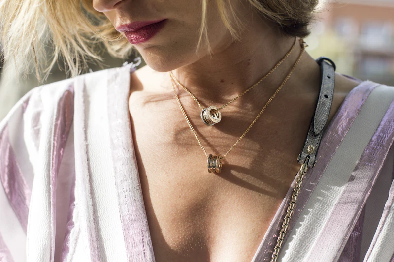
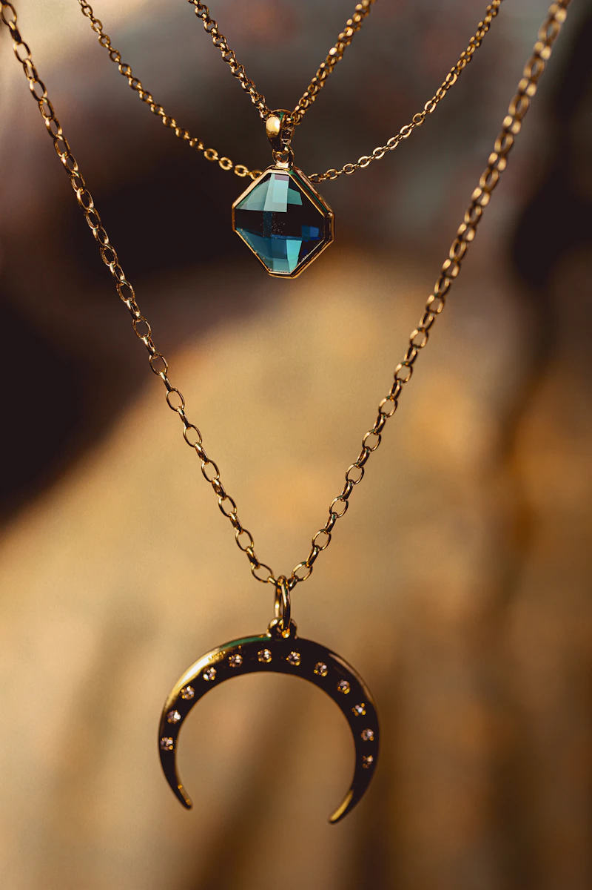
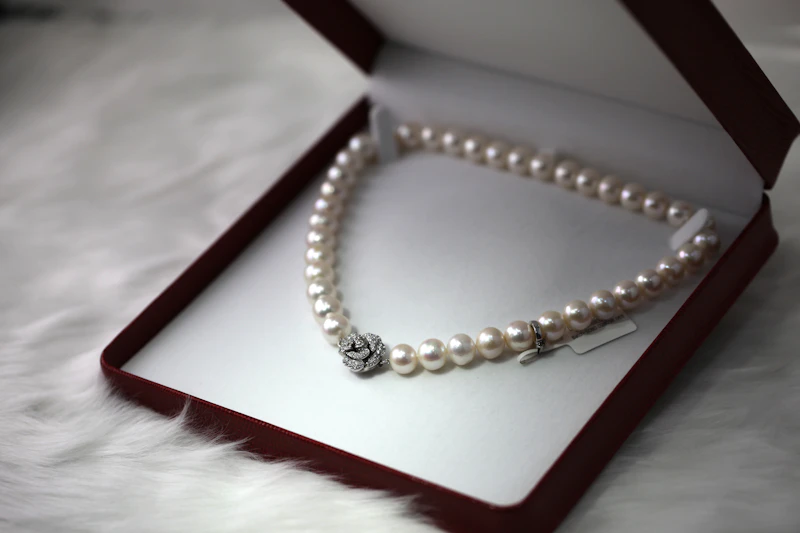

The Quintessential Services of Our Mayfair Atelier
Comprehensive fine jewellery stewardship under the direct supervision of FGA certified gemologists and master goldsmiths.
Bespoke Custom Commissions
Collaborate directly with our Creative Director to design a custom piece from conceptual gouache painting to final British hallmarked gold.
Explore Process →GIA & IGI Diamond Appraisals
Comprehensive optical spectroscopy, origin determination, clarity plotting, and market valuation certificates recognized by worldwide insurers.
Learn Valuation →Heirloom Restoration & Polish
Revitalize antique Victorian, Edwardian, and Art Deco heirlooms with micro-laser welding, prong re-tipping, and multi-stage ultrasonic cleaning.
View Restoration →Precision Laser & Hand Engraving
Etch family crests, Roman numerals, finger-print impressions, or bespoke secret inscriptions onto platinum and gold surfaces.
Discover Engraving →Private Mayfair Vault Storage
Class-5 subterranean vaulting in our Bond Street townhouse with biometric access, climate regulation, and Lloyd's of London insurance coverage.
Vault Protocol →Global Armored Courier Delivery
Door-to-door white-glove armored transit via Malca-Amit and Brink's, providing discreet, fully insured international handover worldwide.
Security Detail →The Bespoke Haute Joaillerie Commission
Creating a bespoke Stackly jewel is an intimate journey of co-creation. Whether repurposing family heirloom diamonds or acquiring a rare vivid blue sapphire, our artisans translate your emotion into platinum and gold.
Discover silhouettes, stone proportions, and receive bespoke hand-painted gouache renderings.
Try a realistic resin wax prototype on your finger before metal casting begins.
Hand-set by master craftsmen and sent to Goldsmiths' Hall for permanent British assay certification.

Certified Gemological Appraisal & Valuation
Under the helm of Eleanor Vance FGA, our in-house laboratory provides rigorous testing of diamonds, pearls, and colored gemstones using advanced refractometers, polariscopes, and Raman spectroscopy.
Every valuation dossier includes high-resolution microphotographs, detailed inclusion maps, metal purity assay, and updated replacement value documents recognized by Lloyd's and leading international underwriters.

Heirloom Restoration & Laser Re-tipping
Antique jewellery possesses delicate historical integrity that modern automated machinery can easily damage. Our restoration specialists employ cool micro-laser welding that preserves original patinas and fragile antique enamel.
- Re-tipping worn claws without stone de-mounting
- Re-stringing knotted silk pearls and gemstone beads
- Matching historic Old Mine Cut and European Cut diamonds
- Non-destructive ultrasonic bath and rhodium rejuvenation

Custom Inscriptions & Armorial Crests
Impart your bespoke piece with intimate significance. We offer traditional hand engraving using micro-burins for deep, light-catching relief, as well as high-precision fiber-optic laser engraving for intricate micro-scripts and biometric fingerprints.

Subterranean Vaulting & Armored Transit
Maison Stackly operates a dedicated underground high-security depository at 45 New Bond Street, equipped with dual-custody biometric locks, seismic vibration sensors, and individual climate-controlled safe deposit boxes.
For international clientele, we coordinate armored white-glove transport directly to private residences, yachts, or family offices across Geneva, Zurich, Dubai, Tokyo, and New York.

Frequently Asked Questions
Answers regarding bespoke timelines, insurance appraisal renewals, and global transit.
Schedule an Atelier Consultation
Reserve an appointment with our master craftsmen or gemologists at 45 New Bond Street, London.